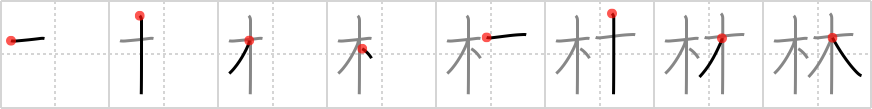

林
← →
grove

Reading:
On-Yomi: リン — Kun-Yomi: はやし
Heisig story:
Learn this frame in connection with the next one. A grove is a small cluster of trees. Hence the simple reduplication of the kanji for tree gives us the grove.
Koohii stories:
1) [Christine_Tham] 30-7-2007(92): A grove has at least two TREEs.
2) [coolbananas] 6-3-2009(23): If you need a mnemonic to remember this then you had better give up now!
3) [hornlo] 15-5-2011(12): [ grove = tree + tree ] - a grove is between a single tree (#195 木) and a many-treed forest (#197 森).
4) [Ninjasha] 21-12-2007(6): Two trees together make up a GROVE.
5) [romanrozhok] 8-6-2008(4): "I must…safe guard the GROVE" says the Keeper of the Grove as he uses his treant ability to cast TWO TREE minions. (warcraft III reference).